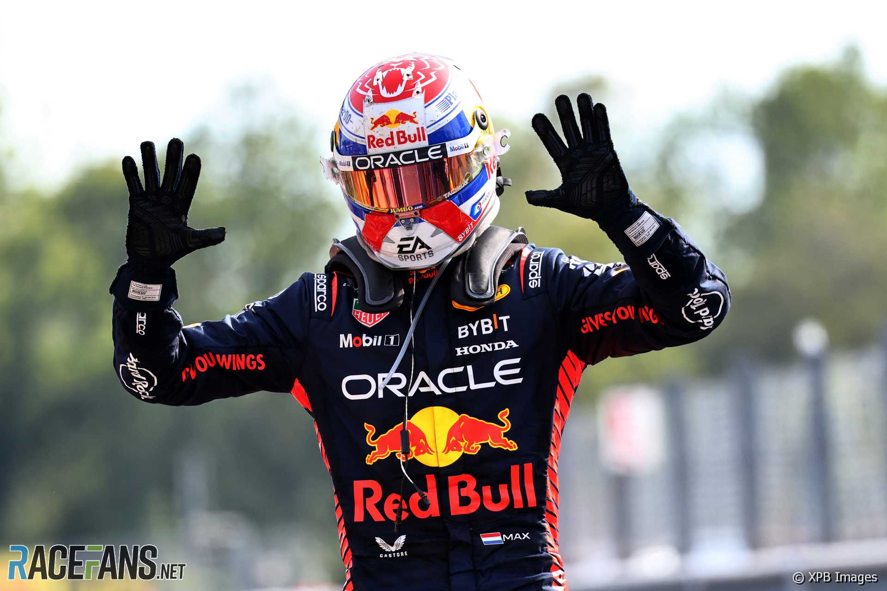

.png)
Max Verstappen – Mad Max

Max Verstappen, figlio d'arte di Jos Verstappen, è diventato il simbolo della nuova generazione di piloti. Il più giovane a esordire in Formula 1, ha conquistato il cuore dei tifosi con la sua guida aggressiva, il talento puro e una determinazione senza compromessi. Con Red Bull Racing ha scritto pagine di storia, dominando la Formula 1 degli anni 2020.
2021 – Il Primo Titolo Mondiale

Dopo una stagione straordinaria, Max Verstappen ha conquistato il suo primo titolo nel 2021 in uno dei finali più discussi e drammatici della storia della F1. Battendo Lewis Hamilton all'ultimo giro ad Abu Dhabi, ha segnato l'inizio di un'era.
2022, 2023 e 2024 – Dominio Totale
I tre anni successivi hanno visto Max dominare in lungo e in largo. Con una Red Bull dominante e uno stile di guida impeccabile, ha vinto la maggior parte delle gare con grande distacco, conquistando il secondo, il terzo e il quarto titolo consecutivo.
Una Carriera Incredibile
Max ha debuttato in F1 a soli 17 anni nel 2015 con la Toro Rosso, prima di passare alla Red Bull nel 2016, dove vinse al suo esordio con la squadra. Da allora, ha battuto record su record, diventando uno dei piloti più vincenti nella storia dello sport.

I Caschi Iconici di Max Verstappen
Casco Campione 2022

Casco Finale 2021

Casco GP Olanda (design arancione)